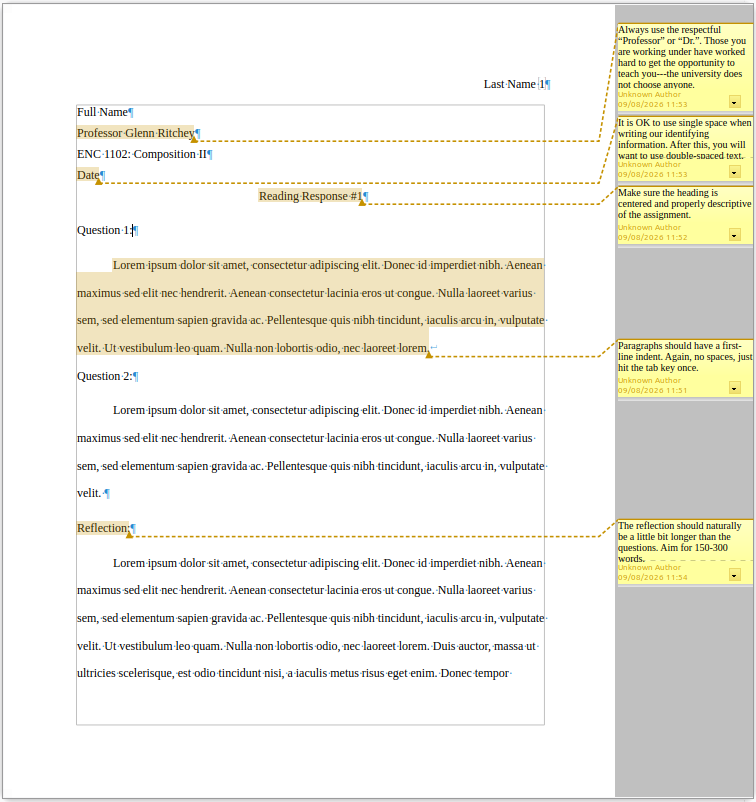
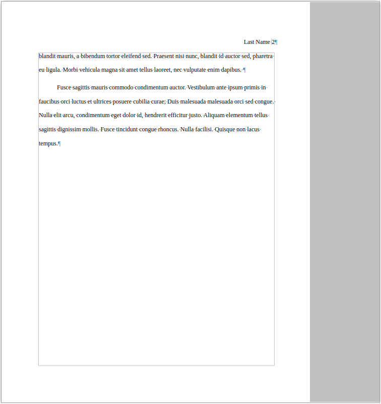
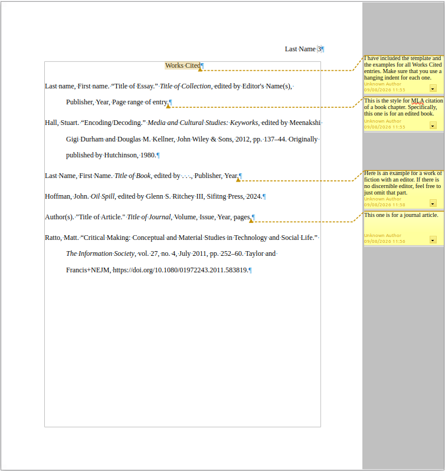

A basic guide to make it through FYC.
A lot of students tend to get confused when it comes to MLA formatting and lose points that they should not have to. Please consider the following images (and text explanations) that will hopefully simply explain how these papers should look upon submission.

This page explains the following basic points of MLA.
"insert page number" to put your last name and the page number in the top right corner.Full NameFull Title & Name of your professor (Always good to include because they worked very hard to earn that title.)Full Course TitleSubmission date2.0 line spacing1.0 line spacing for the indentifying info before the assignment title.first-line indent. This can be set by simply pressing tab when beginning a new paragraph.
There is not too much to discern here, as it is the completion of the reflection paragraphs and serves to illustrate that there is a page break before the Works Cited page.

This page demonstrates the Works Cited page and covers three main types, their templates and an example.
You will need to be sure to include the following (pay attention to the punctuation):
Last Name, First Name."Title of Essay in Quotation Marks."The title of the Collection in italics,edited by Editor's Name(s),Publisher,Year,Page range of entry.This is how the entry will end up looking:
Hall, Stuart. “Encoding/Decoding.” Media and Cultural Studies: Keyworks, edited by Meenakshi Gigi Durham and Douglas M. Kellner, John Wiley & Sons, 2012, pp. 137–44. Originally published by Hutchinson, 1980.
You will need to be sure to include the following (pay attention to the punctuation):
Last Name, First Name.The title of the book in italics,edited by Editor's Name(s), *[only include if relevant]Publisher,Year.This is how the entry will end up looking:
Hoffman, John. Oil Spill, edited by Glenn S. Ritchey III, Sifting Press, 2024.
You will need to be sure to include the following (pay attention to the punctuation):
Last Name, First Name."Title of Essay in Quotation Marks."The title of the Journal in italics,volume number and issue number, *[as formatted below]Month and Year,Page range of entry.Publisher,DOI *[if available]This is how the entry will end up looking:
Ratto, Matt. “Critical Making: Conceptual and Material Studies in Technology and Social Life.” The Information Society, vol. 27, no. 4, July 2011, pp 252-60. Taylor and Francis+NEJM, https://doi.org/10.1080/01972243.2011.583819.
You will need to be sure to include the following (pay attention to the punctuation):
Last Name, First Name."Title of Video in Quotation Marks."The title of the website in italics,uploaded by [Channel Name]Publication Date [DAY MONTH YEAR]Video URLIf no author name is available:
"Title of Video in Quotation Marks."The title of the website in italics,uploaded by [Channel Name],Publication Date [DAY MONTH YEAR],Video URL.“Them and [uz].” YouTube, uploaded by zeynponly, 29 Oct 2023, https://www.youtube.com/watch?v=seMi3zcgUZo.
You will need to be sure to include the following (pay attention to the punctuation):
Interviewee Last Name, Interviewee First Name.Personal interview.Interview Date [DAY MONTH YEAR].Ritchey III, Glenn S. Personal Interview. 16 Sep 2026.
If you have more questions, please see the Purdue Online Writing Lab or contact me through the usual channels.